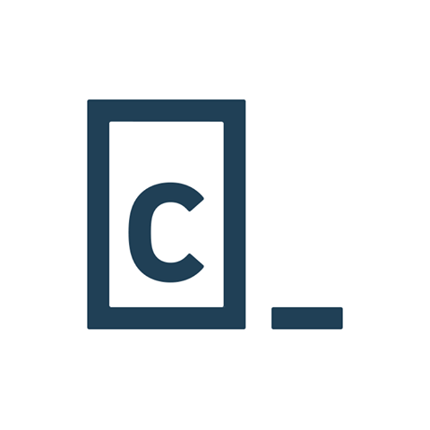

Resumo
Desenvolvedor na Arlequim e estudante de Análise e Desenvolvimento de Sistemas na PUCPR, mexendo com
computadores desde os 14 anos. Desenvolvo sites e aplicativos, incluindo um sistema web completo com banco de
dados PostgreSQL, testes automatizados e integração contínua que hoje apoia o atendimento às escolas públicas
de Nova Lima. Inglês avançado e muita vontade de aprender e crescer na área de desenvolvimento.
Experiência profissional
- Desenvolvimento de sites e aplicativos.
- Criação do Oficineiro+, aplicativo auxiliar que melhorou o fluxo de atendimento às escolas públicas de Nova Lima (veja em Projetos).
- Criação de mundos educacionais no Minecraft Education.
Projetos
Sistema web para gestão das oficinas de tecnologia educacional nas escolas da rede municipal:
presença com conferência de localização, grade de aulas, registro de atividades, relatório mensal
e visitas de campo, com permissões diferentes para cada perfil de usuário.
- Regras de negócio e de acesso no banco, com Row Level Security em todas as tabelas e auditoria das operações sensíveis.
- Testes de banco (pgTAP), testes de interface com Playwright e checagem de acessibilidade, rodando em CI no GitHub Actions.
Bot que consulta uma API para mostrar os eventos ativos do jogo Arc Raiders, além de comandos de diversão para o servidor.
Cadastro com as operações de criar, listar, atualizar e excluir registros.
Formulário web para coleta de informações.
Outros
- Sistema de login e cadastro em React.
- Este currículo, feito em HTML e CSS e publicado no GitHub Pages.
- Em desenvolvimento: rede social simples e uma API com front-end próprio.
Formação

PUCPR · Tecnólogo (2,5 anos)
- Fundamentos de programação, arquitetura de software, banco de dados e SQL.
- Desenvolvimento com Python e Java, padrão MVC e versionamento com Git/GitHub.

Cursos complementares
-
 Inglês · CNA
3 anos · Presencial
Inglês · CNA
3 anos · Presencial
-

Desenvolvimento web e Python · Codecademy
6 meses · Online
-
 Desenvolvimento web · freeCodeCamp
3 meses · Online
Desenvolvimento web · freeCodeCamp
3 meses · Online
-
Desenvolvimento web, Python e Java · Udemy
2 meses · Online
Habilidades
- Linguagens
- Ferramentas
- Sistemas
- Outros
- Idiomas